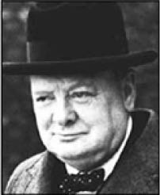
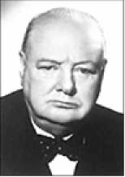
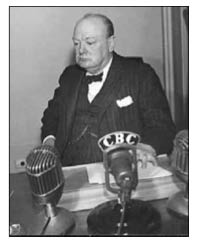

Winston Churchill
Winston Churchill (1874-1965)
“Uçurtmalar rüzgâr gücü ile değil, o güce karşı koydukları için yükselirler.”
Winston Churchill, 30 Kasım 1874’te, Oxfordshire’da doğdu. Kraliyet Harp Okulu’nu 1895’te bitirdikten sonra katıldığı Boerler Savaşı’nda esir düştü; ancak bir yolunu bulup kaçarak halkın gözünde kahraman oldu.
Milletvekilliğinin ardından deniz bakanı olarak sürdürdüğü yükselişi, Çanakkale Boğazı’nda müttefikler adına aldığı ağır yenilgiyle sona erdi. Adeta yeniden başladığı politik yaşamını maliye bakanlığı, bahriye nazırlığı ve sonunda başbakan olarak noktaladı. İkinci Dünya Savaşı’nda aldığı kararlar ve savaş stratejileri sayesinde tarihin sayılı devlet adamları arasında yerini aldı.
İngiliz Başbakanı Winston Churchill, II. Dünya Savaşı’nda ülkesini yenilmekten son anda kurtarmıştı.
Savaşın şiddetini artırdığı günlerde gazetecilerin, “Omuzlarınızdaki ağır mesuliyet sizi üzmüyor mu?” sorusuna karşılık olarak Churchill oldukça ilginç bir cevap vermişti.

“Üzülmek istiyorum ama zaman bulamıyorum!”
İngiliz devlet adamı Churchill, son yıllarında eserlerini yazmaya daha çok ağırlık verdi. 1953 yılında Nobel Edebiyat Ödülü’nü kazandı. Doksan yaşında hayata gözlerini kapadı.
Churchill, Avam Kamarası’nda konuşurken, muhalif partiden bir kadın milletvekili olan Lady Astor, Churchill’e kızgın bir şekilde şöyle seslenir:
“Eğer eşiniz olsaydım, kahvenizin içine zehir karıştırırdım!”
Churchill oldukça sakin, kadına döner ve “Hanımefendi, eğer eşim siz olsaydınız” der, “O kahveyi seve seve içerdim”.
Genç bir gazete fotoğrafçısı Churchill’in doğum gününde fotoğrafını çeker ve “Umarım yüzüncü doğum gününüzde de fotoğrafınızı çekebiliriz efendim!” der.
Churchill fotoğrafçıyı iyice süzdükten sonra şu karşılığı verir:
“Niye mümkün olmasın delikanlı? Bana oldukça zinde ve sıhhatli görünüyorsun!”
George Bernard Shaw, Başbakan Winston Churchill’i, Pygmalion adlı tiyatro oyununun galasına davet ederek şöyle bir not gönderir:
“Size iki bilet ayrıldı. Bir dostunuzu da getirin, eğer varsa.”
Churchill hemen bir not karalayarak ünlü yazara yollar:
“İlk gece gelemeyeceğim için üzgünüm. Fakat ikinci gece gelebilirim, eğer hâlâ devam ederse.”

Winston Churchilrden...
“Düşen bir çığda, hiçbir kar tanesi kendisini olup bitenden sorumlu tutmaz.”
“Cesarete insani niteliklerin ilki gözüyle bakılması yerindedir, çünkü bütün öteki nitelikler onun sayesinde ortaya çıkar.”